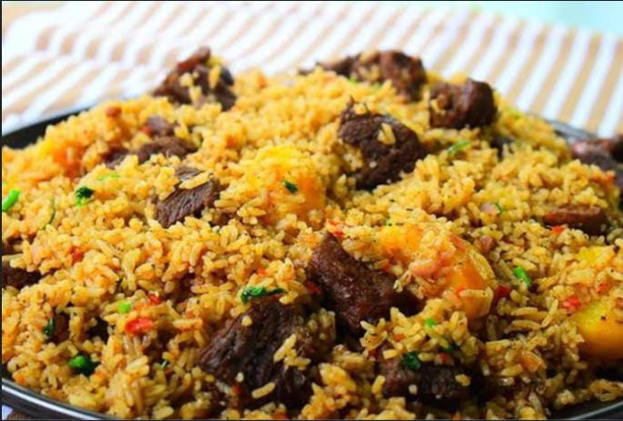

Pilau Recipe

Ingredients
- 2 cups of basmati rice
- 500g beef or chicken, cubed
- 2 onions, sliced
- 3 garlic cloves, minced
- 1 tablespoon ginger, minced
- 2 tablespoons pilau spice mix
- 3 cups beef or chicken stock
- 2 tablespoons vegetable oil
- Salt to taste
Instructions
- Heat oil in a large pot and fry onions until golden brown.
- Add garlic, ginger, and pilau spices. Stir well.
- Add the cubed beef or chicken and cook until browned.
- Stir in the rice and mix thoroughly.
- Pour in the stock, add salt to taste, and bring to a boil.
- Cover and reduce the heat to low. Cook for 20 minutes or until the rice is tender and liquid is absorbed.
- Fluff the rice with a fork and serve hot.